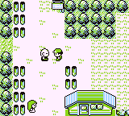
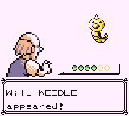
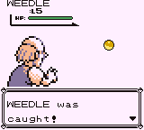
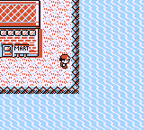
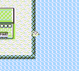
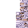
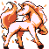

← Back to Red/Blue Guides
To perform the Old Man Glitch, you need:
In Viridian City, there is a particular old man who's passed out and blocks your path before you obtain the Pokédex. After you get the Pokédex, he will have gotten up and will be walking around the area.
If you talk to him, he will ask if you are in a hurry, and if you say no, he will teach you how to catch Pokémon. In the catching demonstration, he will catch a wild Weedle that shows up out of the blue. He will show you how to catch this Weedle as many times as you want if you just talk to him again. Sounds pretty neat, doesn't it?
  Despite being so rudimentary, this tutorial is always available, even when you're at the very end of the game. If you've already gotten to Cinnabar Island, then after completing the tutorial, you can immediately fly over to Cinnabar Island, walk to the eastern shore, and surf alongside the shore tiles...
 
Named after the Old Man in Viridian City, the Old Man Glitch allows players to encounter several rare Pokémon, including glitch Pokémon. During the catching tutorial, the game temporarily replaces the player's name with OLD MAN.
To make sure your original name isn't lost, the game copies your name to the currently loaded grass encounter table. After the tutorial is over, the game restores your original name.
However, the game does NOT clear or initialize the encounter table after the tutorial. The game also does not clear the encounter table if you enter a map that does not have a grass encounter table. Viridian City, Cinnabar Island, and Route 20 do not have a grass encounter table, which makes sense, because neither are supposed to have any grass tiles.
Bodies of water in Kanto usually have these tiles lined up along their western shores. These tiles can be surfed on, and just like other surfable tiles, they may produce a wild encounter if surfed on.
However, in regular gameplay, you might have noticed that the Pokémon encountered while surfing on those tiles are not the same ones as the ones that spawn in deeper waters; they are the same as the ones that spawn in nearby patches of grass. Due to a programming error, these tiles encounter Pokémon from the currently loaded grass encounter table rather than the water encounter table.
That depends on your chosen name. The player's name consists of 11 characters, but it is only possible to directly set 7 of those with a custom name. In addition to the three characters in the naming screen, there are two special characters. These are the "end of name" character (ID 80), and the "null" character (ID 0).
Characters are 8 bit values, so there are 256 possible characters, but only some of them can appear in your name normally. Pokémon IDs are also 8-bit values, so there are 256 possible Pokémon that can appear. However, several of those are glitch Pokémon, and encountering Pokémon with IDs past 200 will result in a battle with a glitch trainer. Pokémon's levels are also 8-bit values, which means they range between 0 and 255. The game only allows leveling up to level 100, and any Pokémon above that level will go back to level 100 if it levels up.
Suppose our theoretical player character has the name ULTPoke. This name takes up all 7 characters that players are allowed to set, but there are 4 unseen characters as well. The 8th character is the "end-of-name" control character mentioned earlier. It is followed by three "null" characters. All custom names have an "end-of-name" character after their last letter, immediately followed by a series of "null" characters.
The encounter table interprets ULTPoke as a table of 5 Pokémon with their own levels: (interpret the slash (/) characters as invisible control characters)
Every green character represents a Pokémon that can be encountered, and every red character represents the level of the Pokémon represented by the green character in front of it. The numbers above the characters represent their indices.
This page lists the internal ID numbers for each Pokémon in Generation I, including glitch Pokémon. The reason so many MissingNo. are interspersed between other Pokémon is because those slots used to be occupied by prototype Pokémon that were eventually scrapped. The programmers were too lazy to clean up and rearrange the indices, so they just dummied out the data.
In our case, the encounter table consists of:
| HAUNTER Lv. 139 |
|
|  | MISSINGNO. Lv. 143 |
|  | RAPIDASH Lv. 170 |
Lv. 80 |
|
Lv. 0 |